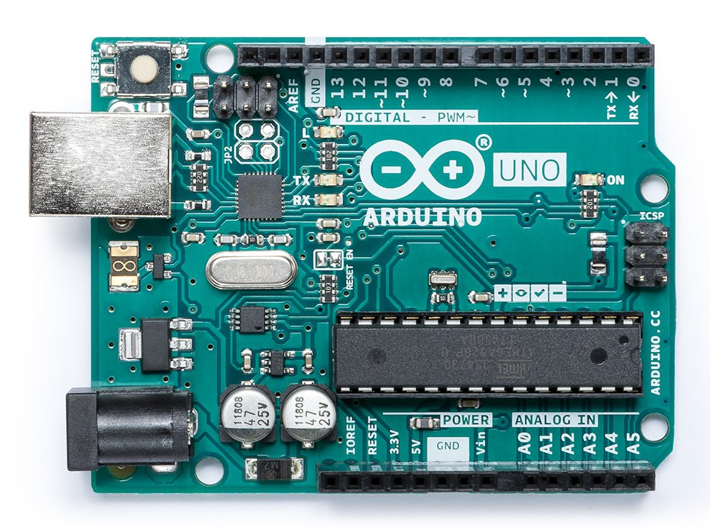
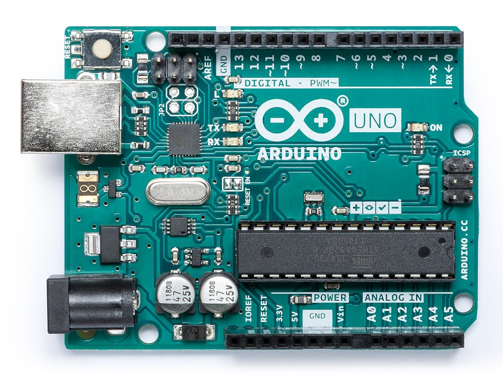

Présentation de mes projets
Micro service pour une borne interactive
Octobre 2019 - Aujourd'hui
Dans le cadre de l'IUT, nous concevons et développons un micro service pour la société IPM France
Ce micro service sera embarqué dans des bornes interactives et devra permettre l'ajout de différents périphériques
sur la borne, ainsi que leur communication avec un navigateur sécurisé.
Technologies utilisées: C#, .NET, ASP.CORE, Javascript, Chromium
"To Do List"
Septembre 2019 - Octobre 2019
Ce projet est une "to-do-list"/ liste de chose à faire, partagée par plusieurs personnes de mon IUT. Nous
avons décidé de développer une application web nous permettant de tout le temps savoir ce que nous avions
à faire en temps réel et sur différentes plateformes. Nous pensons à ajouter un système d'utilisateurs sécurisés
afin de pouvoir permettre à chacun de garder ses tâches privées et accessible uniquement par lui-même.
Technologies utilisées: HTML CSS JS, PostgresSQL, Nodejs
Liens github: Frontend
Backend
Au Petit Matin !
Juillet 2019 - Aujourd'hui
Ce projet à pour but d'optimiser le temps le matin. En effet souvent il m'arrive d'avoir des heures différentes
de réveil du à un emploi du temps qui varie souvent. L'objectif de cette application est de calculer le maximum
de chose faisable au révéil en fonction d'une paramétrisation la veille.
Par exemple: Si je compte faire un peu de sport, prendre une douche, manger un petit déjeuner avant de partir.
Je n'aurais qu'à rentrer ces tâches la veille, avec un odre, une priorité ainsi qu'une fourchette de temps.
Lors du réveil, en fonction de mon heure de réveil ainsi que de l'heure à laquelle je dois partir, l'application
calculera les tâches que j'ai le temps ou non de réaliser.
Technologies utilisées: Angular, Nodejs, MongoDB
Liens github: Frontend
Backend
 

Arduino: Prototype d'une station météo
Juin 2019 - Juillet 2019
Ici, avec un ami, nous avons décidé de mettre en oeuvre des capteurs Arduino de température et de pression dans
différentes pièces, afin de faire des mesures et des graphiques que nous affichons sur un site web.
Technologies utilisées: C/C++, C#, PostgresSQL, PHP

Projet IUT second semestre: Jeu en java
Janvier 2019 - Juin 2019
Dans le cadre du projet de second semestre à l'IUT, nous avons développé une application Java modélisant un
jeu de plateau avec la possibilité de jouer à plusieurs joueurs sur différentes machines. Le jeu consiste en
un jeu au tour par tour ou chaque joueur possède des pions, et chaque pion possède des sorts qu'il peut utiliser.
Le joueur peut également déplacer ses pions et le joueur étant le dernier à posséder des pions sur le terrain
gagne la partie.
Technologies utilisées: Java, Junit, pattern MVC, Swing

Contact